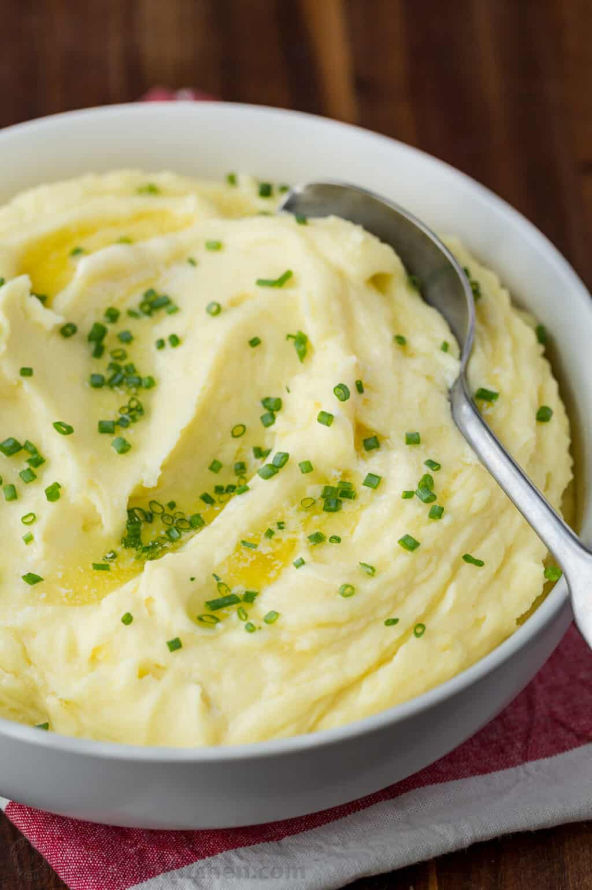

Lasagna Recipe

Description
These Garlic Mashed Potatoes made with roasted garlic and Yukon Gold potatoes are amazing in every way. These extra creamy, garlic mashed potatoes are simply the BEST!
Ingredients
- 1 head garlic, whole and unpeeled
- 1 tablespoon extra virgin olive oil
- 2 pounds potatoes, preferably Yukon Gold or another yellow, waxy potato
- 1/2 teaspoon salt , plus more to taste
- 1/3 cup cream
- 3 tablespoons butter
Step-by-Step Guide
- Preheat the oven to 400°F
- Roast the garlic
- Boil the potatoes
- Warm the cream and melt the butter
- Mash the potatoes with garlic
- Add the cream and butter, then season
Source:Garlic Mashed Potatoes